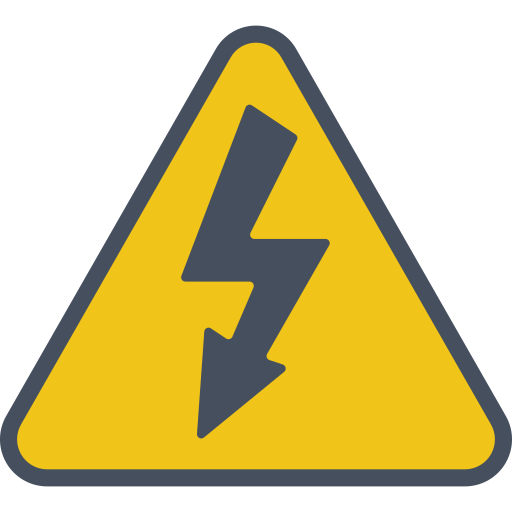

VIEL
obras Eléctricas
servicios
¿Quienes somos?

En Viel obras elécticas somos un equipo de profesionales con años de trayectoria en el rubro,
una empresa de montaje electrico.
Concebimos la
electricidad como aquello imperceptible, físicamente invisible, que nos permite avanzar,
crecer, hacer y deshacer. Estamos presentes en todo el circuito, desde la generación hasta
el consumo final de la energía convencional y renovable. Tenemos la visión global del proceso,
y eso potencia nuestra versatilidad.
Nos caracterizan la agilidad y la eficiencia. Acompañamos a nuestros clientes y estamos dónde
y cuándo nos necesitan.
Centrados en la escucha, brindamos soluciones eléctricas personalizadas.
Nuestra esencia es el compromiso y la garantía de seguridad.
¿Que ofrecemos?

Antes de poner en marcha una nueva obra, Viel obras elécticas realiza
todos los ensayos eléctricos y de recepción y puesta
en servicios de instalaciones para garantizar el éxito de las operaciones,
cuidando la comunidad y el medio ambiente
¿Que realizamos?

Viel obras elécticas realiza el mantenimiento de transformadores de 500, 220 y 132 kV,
de propiedad o de terceros, en todo el país.
¿Te dejamos estos consejos?

Cuando cambies un lámpara, tomala por el bulbo. Nunca toques la parte metálica.
No uses artefactos eléctricos en lugares húmedos.
No toques las partes metálicas con las manos mojadas o estando descalzo.
Desenchufá los aparatos eléctricos antes de limpiarlos o repararlos.
Tirá de la ficha, no del cable.
Evitá enchufar muchos electrodomésticos a la misma conexión: los cable sufren
una sobrecarga que puede provocar un cortocircuito.
Colocá tapas para bloquear los tomacorrientes al alcance de los niños, y asegurate
de que sean para la intemperie los tomacorrientes que tengas en el patio o en el jardín.
Ante la necesidad de reparaciones o instalaciones, llamá siempre a un electricista
matriculado.
Pedile que reemplace cuanto antes los cables pelados o defectuosos, así como las
instalaciones viejas que poseen cable de tela.
Cuando le encargues una instalación nueva, exigile el cable más adecuado para resistir
la carga.
En la medida de lo posible, solicitale un disyuntor diferencial de corrientes y llaves termomagnéticas.